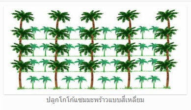
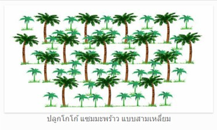

⬅ กลับหน้าหลัก
🌱 คู่มือการปลูกและดูแลรักษาโกโก้
🌳 การปลูกและดูแล
โกโก้เป็นพืชที่ทนร่มเงาและไม่ชอบแดดจัด นิยมปลูกแซมในสวนมะพร้าวเพราะได้รับแสงแดดในปริมาณที่เหมาะสมพอดี นอกจากนี้โกโก้ยังมีระบบรากลึกทำให้ไม่แย่งอาหารกับมะพร้าว
ระยะปลูก: กรณีปลูกเชิงเดี่ยวใช้ระยะ 3x4 เมตร แต่หากปลูกแซมสวนมะพร้าว (ระยะ 9x9 ม.) ให้ปลูกโกโก้ระยะ 3x3 ม. โดยต้องปลูกห่างจากต้นมะพร้าวอย่างน้อย 2 เมตร
เทคนิคเพิ่มเติม: หากมะพร้าวสูงเกินไปจนแดดจัด ควรพรางแสงด้วยทางมะพร้าวหรือปลูกปอเทืองรอบๆ ต้นโกโก้เล็ก


✂️ การตัดแต่งกิ่ง
มีจุดประสงค์หลัก 3 ประการคือ:
- เพื่อสร้างรูปทรง: ตัดกิ่งข้างที่ต่ำกว่า 0.5 เมตรออกให้หมด และไว้กิ่งที่สมบูรณ์ 3-4 กิ่งรอบลำต้น
- เพื่อบำรุงรักษา: ตัดกิ่งคดงอ ซ้อนทับ หรือโน้มลงดิน เพื่อให้กิ่งที่ออกผลแข็งแรงและเก็บเกี่ยวสะดวก
- เพื่อป้องกันโรคแมลง: ตัดกิ่งที่เป็นโรคออกเพื่อลดการสะสมและช่วยให้อากาศถ่ายเท
ช่วงเวลาที่เหมาะสม: ตัดแต่งใหญ่ช่วงปลายฤดูร้อนก่อนฤดูฝน และตัดแต่งกิ่งเล็กช่วงปลายฤดูฝน
🧪 การใส่ปุ๋ย
- ต้นเล็ก: ใส่ปุ๋ยอินทรีย์ 50 กก./ไร่ ร่วมกับสูตร 15-15-6 (40-100 กรัม/ต้น)
- ต้นโต (ปีที่ 3 ขึ้นไป): ใส่ปุ๋ยอินทรีย์ 50 กก./ไร่ ร่วมกับสูตร 12-12-17 (100 กรัม/ต้น) แบ่งใส่ 2 ครั้ง ช่วงต้นฝนและปลายฝน